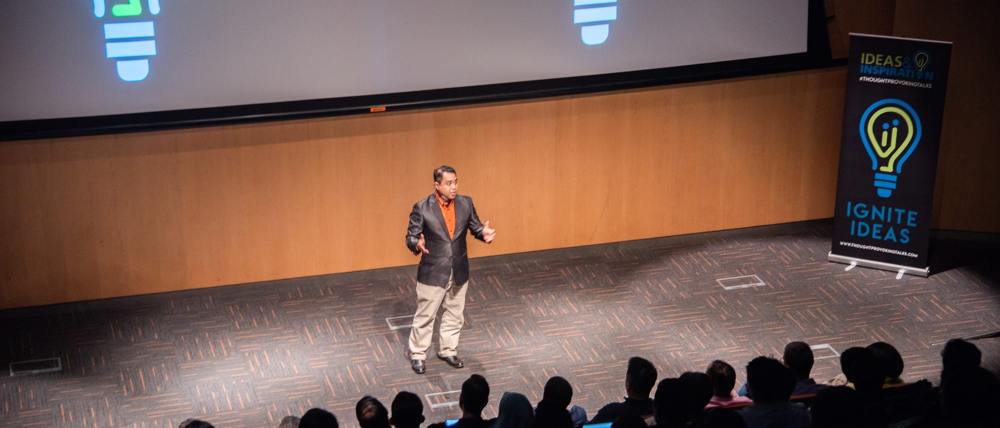
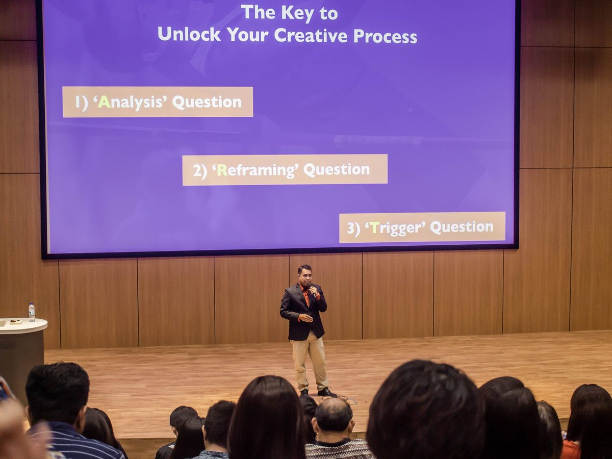
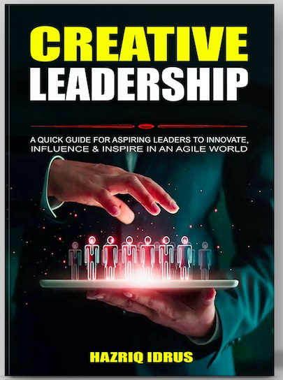

When the script changes, how will your people respond?
Work doesn't always go according to plan. A difficult conversation. An unexpected question. A meeting that takes an unexpected turn. A team struggling to build on one another's ideas. A leader making decisions without having all the answers.
The real test isn't when everything goes according to plan — it's what happens when the script changes.
The Speaking Factory — training team leaders, middle managers and corporate teams since 2011.
A leader reads from a script they no longer have.
A leader who can think, respond and lead — with no script at all.
The Speaking Factory helps team leaders, middle managers and corporate teams think creatively, communicate positively and collaborate effectively — especially when there is no script.

WHY WE EXIST
Think creatively. Communicate positively. Collaborate effectively.
Today's workplace demands more than technical knowledge. People need to think beyond the obvious, communicate when conversations get difficult, listen and respond in the moment, work with different perspectives, and adapt when circumstances change. We develop these capabilities through experiential learning inspired by theatre improvisation.
Thinking
Develop curiosity, make connections and explore new possibilities.
Communicating
Listen, respond and express ideas with clarity, confidence and intention.
Collaborating
Build on ideas, contribute openly and work better together.
CREATIVE LEADERSHIP BEGINS WHEN THE SCRIPT ENDS
Creative Leadership isn't simply about having creative ideas.
It's about knowing how to respond when things don't go according to plan — when the question catches you off guard, when the conversation takes an unexpected turn, when the original plan no longer works, when your team needs you to step up, when there is no obvious answer.
THAT'S WHERE CREATIVITY, COMMUNICATION AND COLLABORATION COME TOGETHER. AT THE SPEAKING FACTORY, WE CALL THIS:
Creative Response Ability
The ability to think, respond and act effectively when the moment doesn't go according to plan. Because leadership doesn't happen only when everything is predictable.
Leadership happens in the moments you didn't prepare for.
KEYNOTES
Keynotes and Lunch & Learns
Engaging, thought-provoking sessions that introduce practical ideas through stories, activities and theatre improvisation.
Creative Leadership Begins When the Script Ends
How to think, respond and lead effectively when situations become unpredictable.
Think On the Spot, Speak Off the Script
Developing the ability to communicate confidently when you don't have a prepared script or perfect answer.
Powered by Creativity
How theatre improvisation trains the quick thinking professionals need in today's workplace.
The Stage Fright Antidote
Practical lessons from acting and theatre to become more confident and effective when speaking.
WORKSHOPS
Workshops & Training
Highly experiential programmes that allow participants to practise the skills they need in real workplace situations.
Creative Leadership
Develop leaders who can think creatively, respond to change and lead effectively through uncertainty.
Workplace Communication
Strengthen listening, interpersonal communication, leadership conversations and the ability to respond with clarity and confidence.
Team Collaboration
Build teams that listen, contribute, build on ideas and work together more effectively.
Quick Thinking & Decision-Making Under Pressure
Practise responding to unexpected situations, making decisions and moving forward without having all the answers.
Powerful Presentation & Public Speaking
Go beyond memorising slides and scripts. Develop greater presence, vocal confidence and the ability to respond in the moment.
Design Thinking & Innovation
Develop curiosity, make new connections and find possibilities beyond the obvious.
METHODOLOGY
Why use Theatre Improv as Methodology
Meetings are improvised. Conversations are improvised. Leadership moments are improvised. Problems are improvised.
You can prepare your presentation. You cannot prepare for every question.
You can plan the meeting. You cannot predict every response.
You can create a strategy. You cannot control everything that happens next.
Theatre improvisation gives people a safe and engaging environment to practise responding to the unexpected. Through principles such as Yes, And, participants practise:
Pay attention to what is actually happening.
Work with reality rather than resisting it.
Take what someone gives you and move the idea forward.
Respond when circumstances change.
Have the courage to step forward and participate.
It's not about becoming an actor.It's about becoming better at being human at work.
THE A.C.T. APPROACH
Action-based · Creativity · Theatre Improv
The Speaking Factory's programmes are designed around experiential learning. People don't just listen to ideas — they experience them.
Action-Based Learning
Participants get involved, practise new behaviours and learn through doing.
Creativity
Participants develop curiosity, make connections and explore possibilities.
Theatre Improv
Improvisation creates a safe space to practise listening, responding, adapting and collaborating in real time.
FROM STAGE TO WORKPLACE
Meet Hazriq IdrusCreative Leadership StrategistFounder, The Speaking Factory Pte Ltd

AUTHOR · SPEAKER · STAGE ACTOR
Hazriq Idrus
As a young student, Hazriq once froze on stage during a school quiz competition. Instead of staying away from the stage, he eventually found his way back through acting. That journey took him from theatre stages across Singapore to boardrooms and conference halls across Asia.
Along the way, he discovered something: what performers learn on stage can help people perform better at work.
Stagecraft meets workplace craft.
Today, Hazriq brings together stagecraft and workplace craft to help professionals communicate, collaborate and respond more effectively when the moment doesn't go according to plan. He has worked with organisations including BMW Asia, PRefChem, StarHub and the Singapore Turf Club, and has reached more than 5,000 learners through speaking, training and education.
BOOKS
Books by The Speaking Factory
The Stage Fright Antidote 2.0
Your Guide to Mastering Public Speaking & Presentation using principles from Acting, Creativity & Theatre Improvisation
Get the book
Creative Leadership
A Quick Guide for Aspiring Leaders to Innovate, Influence and Inspire in an Agile World
Get the bookPowered by Creativity Upcoming
How Theatre Improv Trains the Quick Thinking Every Professional Needs
RAVE REVIEWS
Selected clients, and where we've been featured.
SELECTED CLIENTS
FEATURED / SEEN IN
TESTIMONIALS
What Clients Say
“Hazriq's class was really fun and engaging, and full of practical tips! The full day workshop was well-paced and had hands-on practice for application which was extremely useful.”
Dorcas YangDigital & Social Media Manager
“He made us curious about how we can incorporate creativity in a rigid work sector… surprised at how easy it is to apply creativity in our work.”
Diyana TojimanSchool Programme Coordinator, Universiti Sains Malaysia
“Hazriq had a wonderful presence as a speaker who easily engaged the audience with his 'Language of Creativity' message. His timing was spot on with this TEDx style presentation, which helped me as MC keep our event on track. I highly recommend Hazriq to help listeners use creativity to live happier lives.”
Rob SalisburyEvent Host, Strategic Resources
LET'S TALK
Ready to help your people respond when the script changes?
Whether you're planning a:
- Keynote
- Lunch & Learn
- Corporate Workshop
- Leadership Programme
- Team Development Session
- Communication Programme
Let's explore what would work for your organisation.
Email: info@thespeakingfactory.com
WhatsApp: +65 8991 7791